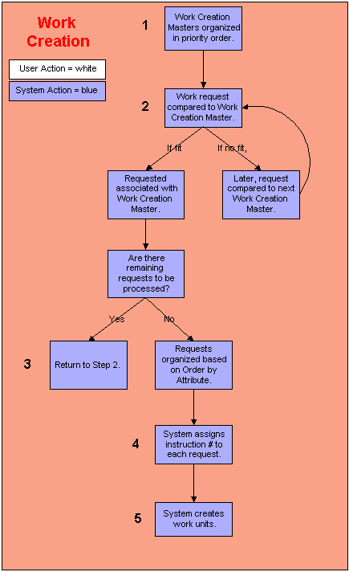
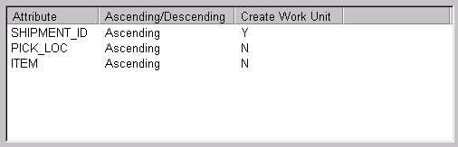
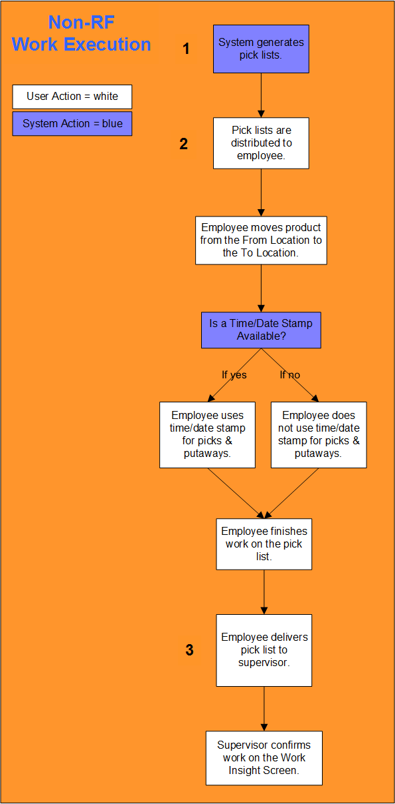
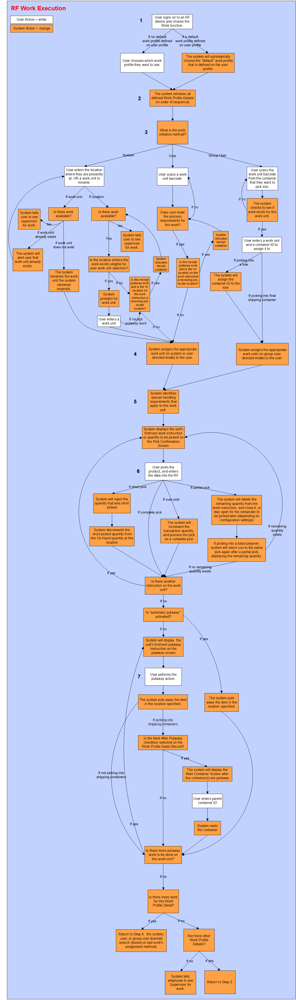
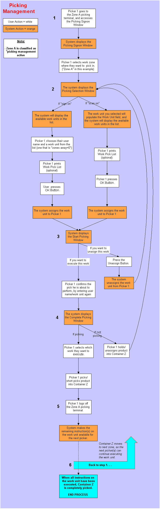
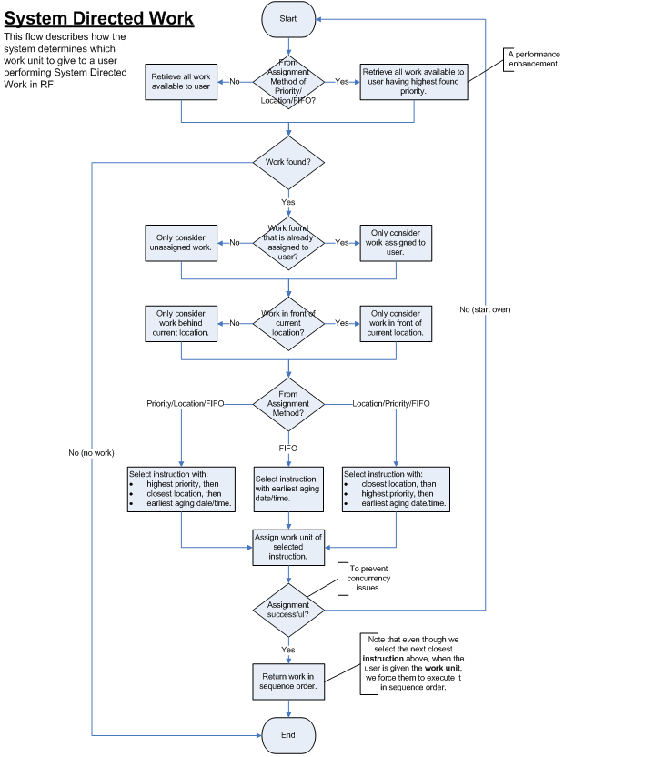

** Process Flows **
The following diagrams are featured in this topic:

This process generates work instructions for work requests from various sources.
The system determines which records it needs to retrieve, based
on the process that requested work creation. The process determines why
work creation was initiated. On each work creation record, the system
checks the Process Field to determine if it applies.
The system organizes the appropriate work creation master records based on priority number.
After the system determines which records can be applied to the work requests, the system organizes them in priority order. The priority number is defined on the work creation master record. The lower the priority number, the sooner the record is used to process work requests.
Based on priority, the system selects the first creation master record that it will compare to the work requests.
The system references the work criteria record associated with this work creation master. The work criteria record defines which work requests can be processed using the work creation master record.
If the request does meet the criteria defined on the work criteria record, the system will associate it with the work creation master record. This request will not be reviewed by the next work creation master: it is 'reserved'. The system will compare the remaining requests to this work creation master record.
If the request does not meet the criteria defined on the work criteria record, the system temporarily holds the request. It retrieves the next request and attempts to process it using this work creation master record. After the system has processed through all of the requests, it will compare the 'declined' request to the next work creation master record.
For example, assume the tab contains the following value: Shipment ID, Ascending Order. The system will organize the requests in shipment ID order, with the lowest ID number first.

Note that this screen diagram is from the Order By Tab on the Work Criteria Window.
The system processes through the detail records in the order created during Step 3.
Each request becomes a detail. Each detail is assigned a work instruction number. This is an internal number that identifies the detail to the system.
When the system reaches the work unit break, it creates a work unit. The work unit is assigned an instruction number. The work unit groups together all instructions that will be assigned to one employee.
If the Auto Print Checkbox on the Work Creation Master Window is selected and this work unit was created for an outbound process, the system will print the pick list as soon as the work unit is created.

The work execution process occurs when employees obtain the product required to fullfill customers' shipment requests. The work units processed during work execution were generated during work creation. Work that is not executed on an RF device is typically completed from pick lists. The procedures below provide a general method for executing Non-RF work; since system intervention is minimal, the actual procedures are based on your business practices.
Pick lists are generated at the work unit level. To system references the work criteria record to determine which instructions are included in the pick list.
The following values are defined on the pick list:
Work Unit Number
Team (if applicable)
From Zone
From Location
To Zone
To Location
Item # / Description
Quantity
Order Number
Employees will obtain product from the From Locations and deliver it to the To Locations. If applicable, they will use a time/date stamp to indicate when product was picked and putaway.
After the employee has processed the work on the pick list, he/she will deliver the pick list to the data administrator responsible for entering work activity in the system. Note: The user and warehouse must have access to a work profile that supports the work type and work zones on the work instruction.
The data administrator will use the Work Insight Screen to indicate what work activity occurred on the floor. He/she will complete the following activities:
Identify the person who processed the work unit.
Identify when the product was picked and putaway in the Start Time/Date and End Time/Date Fields (if a time/date stamp was used).
Identify the quantity picked.
If appropriate identify why a short pick or other irregular activity occur.
Once the work is confirmed, the system will change its status to Ready for Packing.

The work execution process occurs when employees obtain the product required to fulfill customers' shipment requests. The work units processed during work execution were generated during work creation.
How an employee can work is determined by the work profile record associated with his/her user sign on. When the employee signs on to an RF device (and chooses the Work function), the system will determine how he/she should process work. The system uses the following process to select the appropriate work profile:
Note that if none of the detail records match the work instructions, the system will display a message requiring the employee to obtain work from a supervisor.
If starting receipt putaway work from RF for a receipt container and the To location on the work instruction is the receiving pre-locate location, then the system will relocate the receipt container.
The system references the Work Special Handling Constraints Window to identify unique handling requirements for this work unit. A special handling constraints record determines the following:
Next, the user picks the product, and enters the appropriate data into the RF device.
After the pick processing is completed:
The user will putaway the item quantity at the appropriate location. Note that if your work profile is defined to putaway into shipping containers, and you are putting away to a put-to-store location or the shipping dock, you will need to provide the container ID that you are putting into. Also, if this is a new container, you will need to indicate the container type. After the user performs the putaway action on the item, the system will putaway the quantity in the specified location. If the user's work profile indicates that they should nest container(s) after putaway, the system will display a screen to perform this action. The system will also check to see if there is any more putaway to be completed for this work unit. If there is, the next instruction will be displayed. If not, the system will check to see if there is any more work for this work profile detail.

